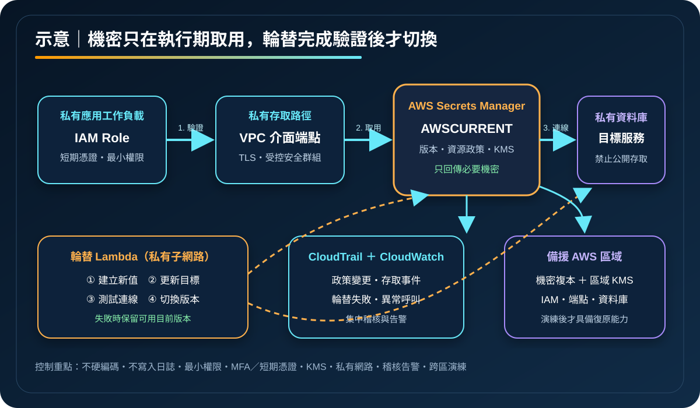

AWS Secrets Manager：機密生命週期、輪替與安全存取
AWS Secrets Manager 用來集中儲存、取用、輪替與稽核資料庫登入資訊、API 機密及其他敏感設定。它降低機密散落於程式碼、映像、環境檔與人工文件的風險，但不會自動修正過寬權限、應用程式記錄外洩或不完整的輪替流程。
作者：Dr. William｜查閱與發布：2026-09-13
服務定位
AWS Secrets Manager 是受管機密管理服務。應用程式可在執行期透過 AWS API 取得機密，服務以 AWS KMS 金鑰加密靜態資料，並以版本與 staging label 管理目前、待生效及前一個值。對支援的資料庫或自訂目標，可透過輪替函數執行建立新值、設定目標、測試及切換版本。
Secrets Manager 管理的是敏感值的生命週期，不是一般設定資料庫。非敏感階層式參數可評估 Systems Manager Parameter Store；需要完整輪替、跨區複寫與機密治理時，再依功能、延遲與成本選擇 Secrets Manager。
核心概念與適用邊界
主要元件
- Secret：敏感字串或鍵值組，附帶 ARN、標籤、資源政策及版本。
- 版本標籤：
AWSCURRENT指向目前值，輪替期間可使用AWSPENDING，舊值通常標示為AWSPREVIOUS。 - AWS KMS：每個機密以 AWS 受管或客戶管理金鑰進行靜態加密；金鑰政策同時構成授權邊界。
- 輪替：依排程或立即觸發，常由 Lambda 執行四階段流程，必須驗證目標系統真的接受新值。
- 複本：可將主要機密複寫到其他 AWS 區域，區域複本使用該區域的 KMS 金鑰。
責任與限制
- 服務保存機密不代表所有工作負載都已停止使用硬編碼或舊副本。
- 授權同時受身分政策、資源政策、KMS 政策及適用的組織控制影響。
- 應用快取可降低 API 呼叫與延遲，但快取期限過長會延後新版本生效。
- 跨區複本提升區域可用性，不等於目標資料庫、網路與應用都已可切換。
- 輪替函數本身是高敏感工作負載，需隔離網路、限制權限並保護部署供應鏈。
適合與不適合的使用情境
適合
- 應用需要在執行期取得資料庫認證資訊、外部 API 機密或服務整合所需敏感設定。
- 組織需要集中控管機密存取、版本、定期輪替、稽核紀錄與跨區複寫。
- 容器、Lambda 或 EC2 工作負載可使用 IAM Role 與短期憑證驗證，不必在部署流程攜帶長期雲端憑證。
- 資料庫認證資訊需要可測試的自動輪替，以及失敗時保留前一版本的回復路徑。
不適合或不能單獨完成
- 非敏感設定、大型二進位檔案或高頻資料查詢，不應把 Secrets Manager 當一般資料庫使用。
- 只把硬編碼內容複製進服務，卻不清除 Git 歷史、映像、日誌與舊部署，無法消除既有暴露。
- 前端瀏覽器或行動應用不能安全持有伺服器端機密；必須由受控後端代為呼叫。
- Secrets Manager 不取代 IAM Identity Center、IAM Role、憑證管理、KMS 金鑰治理或完整的災難復原設計。
示意故事案例：訂單服務的執行期機密與輪替
以下為示意案例，不代表特定組織或正式部署。 一個跨兩個可用區運作的訂單服務需要連接私有 Aurora 資料庫。容器只取得讀取單一機密版本所需的工作負載角色，不在映像、環境檔或 CI/CD 變數留下明文。服務透過 VPC 介面端點呼叫 Secrets Manager，驗證 TLS 後取得目前版本，並在記憶體中短暫快取。
輪替排程觸發位於私有子網路的 Lambda。函數建立新資料庫認證資訊、更新資料庫、以受限測試查詢驗證，再把版本標籤切換到新值；任何階段失敗都不應破壞仍可用的目前版本。CloudTrail 記錄管理與取用事件，CloudWatch 監看輪替失敗、異常呼叫量及應用驗證結果。主要機密另複寫至備援區域，但災難演練仍須同時驗證資料庫、KMS 金鑰、IAM、端點與應用切換。

建置與運作流程
- 建立機密清冊：確認擁有者、使用工作負載、資料分類、輪替週期、區域與退場條件。
- 移除靜態憑證：先讓人員使用 IAM Identity Center、MFA 與短期角色，讓工作負載使用 IAM Role；已暴露的舊值必須撤銷與輪替。
- 設計加密邊界：依合規與跨帳號需求選擇 KMS 金鑰，限制金鑰管理與解密權限，建立停用及刪除告警。
- 建立最小權限：以特定 Secret ARN、版本階段、標籤及來源條件限制讀取；跨帳號時同時檢查資源政策與 KMS 政策。
- 建立私有存取：工作負載與輪替函數放在受控子網路，依需求使用 Secrets Manager VPC 端點，限制安全群組與對外連線。
- 實作執行期取用：使用 AWS SDK 與受控快取，禁止把回傳內容寫入例外、追蹤、日誌、指標標籤或前端回應。
- 測試輪替：在非正式環境驗證四階段流程、重試冪等性、資料庫連線、快取更新、失敗回復及舊版本退場。
- 建立觀測：集中保存 CloudTrail，使用 CloudWatch 與事件流程監看政策變更、刪除、輪替失敗及異常存取。
- 驗證復原：備援區域預先建立必要 IAM、KMS、網路與工作負載；定期演練複本提升、依賴服務切換與應用測試。
成本、可用性與維運考量
Secrets Manager 主要依每個機密的保存時間與 API 呼叫計費，輪替 Lambda、KMS、CloudTrail、CloudWatch、VPC 介面端點、跨區複本及資料傳輸可能另產生費用。相同值若被拆成大量 Secret，或應用每次請求都重新呼叫 API，會增加成本與延遲；受控的用戶端快取可降低呼叫量，但必須配合輪替週期與失效策略。
服務採區域設計。應用要處理暫時性錯誤、節流及重試，並避免在每個請求的關鍵路徑形成不可快取的單點依賴。跨區複寫可提供區域內可讀的副本，但複寫具有時間差；若主要區域故障，仍需明確的備援提升、資料庫切換、DNS、IAM、KMS 與驗證程序。
自動輪替能縮短機密有效期，卻會增加資料庫使用者管理、Lambda 網路、測試、例外處理與相依應用更新的複雜度。輪替頻率應依威脅、法規、目標服務能力與實測失敗風險決定，不能只以排程成功判斷完成。
Secrets Manager 特有資安風險與控制
- 讀取權限過寬：萬用資源或跨環境共用角色會放大外洩面。依單一應用與環境限制 Secret ARN、標籤、版本階段和 KMS 解密權限。
- 資源政策造成跨帳號暴露：使用 BlockPublicPolicy 與政策驗證，明確限定可信帳號、組織和角色，避免使用公開或模糊主體。
- 機密進入日誌：禁止記錄 API 回傳、請求參數與環境內容；對 CloudWatch Logs、追蹤、錯誤報告及 CI/CD 產物執行敏感資料掃描。
- 輪替函數遭濫用：函數可能同時修改目標與 Secret。採專用最小權限角色、程式碼簽署或受控供應鏈、私有網路與變更審核。
- 輪替部分成功：新值寫入資料庫但版本標籤未切換，可能造成服務中斷。四階段必須冪等，測試新值後才切換，並保留可回復版本。
- 混淆代理人：輪替 Lambda 應確認 Secret 與預期資料庫或服務的關聯，不能只相信可被修改的輸入。
- KMS 權限或金鑰失效：政策錯誤、停用或排程刪除會阻斷讀取。分離管理與使用權限，監控高風險變更，將解密納入復原演練。
- 公開網路與資料外送：應用及輪替函數使用私有子網路與 VPC 端點；安全群組只允許必要流量，目標資料庫不公開。
- 長期快取舊值：設定受控 TTL、輪替後重新整理及雙版本過渡，監看持續使用舊版本的失敗。
- 刪除與跨區落差：對刪除、還原、複寫及區域提升建立審批、CloudTrail 告警與演練，避免備援依賴尚未複寫的最新值。
共同責任邊界
AWS 負責 Secrets Manager 受管服務與底層雲端基礎設施的安全，以及服務提供的加密、版本、API、輪替整合與區域複寫機制。客戶負責決定哪些資料屬於機密、建立與更新值、選擇 KMS 金鑰、設定 IAM 與資源政策、部署和維護自訂輪替函數，並驗證應用及目標系統在輪替後正常運作。
客戶仍須落實 IAM 最小權限、人員 MFA 與短期憑證、網路隔離、阻擋資料庫及管理端點公開存取、KMS 金鑰治理、Secrets Manager 與 Parameter Store 的資料分流、CloudTrail／CloudWatch 觀測、備份及跨區復原。AWS 不會自動清除程式碼或日誌中的舊值，也不會替客戶判斷資源政策是否符合業務授權。
上線前可執行檢查清單
- □ 每個機密已有擁有者、使用者、分類、輪替週期、區域、復原與退場紀錄。
- □ Git 歷史、映像、環境檔、CI/CD 產物、文件與日誌不含有效的 credential、Access Key、Secret Key、Token、密碼或 cookie。
- □ 人員使用聯合登入、MFA 與短期權限；工作負載使用 IAM Role，不保存長期 AWS 憑證。
- □ 身分政策、Secret 資源政策與 KMS 金鑰政策均限制至必要角色、資源及條件。
- □ 已驗證不存在公開或非預期跨帳號存取，並對政策變更與刪除建立審批及告警。
- □ 應用與輪替函數位於受控網路；資料庫不公開，VPC 端點與安全群組只開放必要流量。
- □ 應用不將機密寫入日誌、錯誤、追蹤、指標、前端回應或可下載診斷包。
- □ 輪替流程具備冪等性、目標驗證、失敗回復、快取失效及舊版本退場測試。
- □ CloudTrail 集中保存；CloudWatch 已監看異常讀取、輪替失敗、KMS 與政策高風險變更。
- □ 跨區需求已建立複本與該區域 KMS 金鑰，並實測應用、資料庫、IAM、網路及提升程序。
- □ 已估算機密數、API 呼叫、輪替 Lambda、KMS、日誌、端點與跨區複寫成本。
AWS 官方一手來源
- AWS Secrets Manager User Guide｜What is AWS Secrets Manager?（查閱：2026-09-13）
- Best practices for AWS Secrets Manager（查閱：2026-09-13）
- Rotate AWS Secrets Manager secrets（查閱：2026-09-13）
- Replicate AWS Secrets Manager secrets across Regions（查閱：2026-09-13）
- Log AWS Secrets Manager events with AWS CloudTrail（查閱：2026-09-13）
- AWS Secrets Manager pricing（查閱：2026-09-13）
- AWS Well-Architected Security Pillar｜Shared responsibility（查閱：2026-09-13）
內容說明
本文依查閱日可用的 AWS 官方文件整理，作為基礎學習與架構討論材料；實際部署仍須依最新區域支援、價格、配額、目標服務輪替能力、組織政策、資料分類、法規及復原演練結果調整。